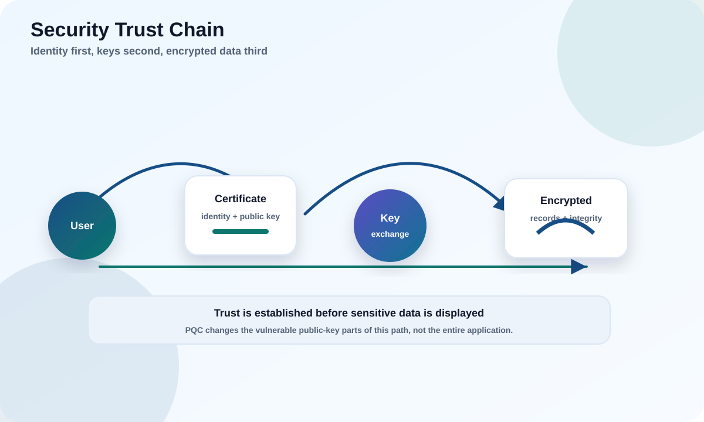

Before we talk about "post-quantum" anything, let's answer a simpler question: what is cryptography actually doing for you every day, and why is only part of it at risk from quantum computers?
Explain confidentiality, integrity, authentication, and signatures in plain words.
Tell encryption, hashing, MACs, signatures, and certificates apart.
See why public-key cryptography is the piece quantum computers threaten most.

Try it: what really happens when you open a bank website
You typed a web address and saw a login page. But before a single pixel appeared, your browser and the bank did four cryptographic jobs. Step through them.
Why this matters
Only step 2 — the public-key key establishment — and the certificate signatures in step 1 are directly broken by a quantum computer. The fast symmetric encryption in step 3 mostly just needs bigger keys. Keep that split in mind for the whole course.
1
What problem cryptography solves
Cryptography exists because your data travels through equipment you do not own or trust.
A phone, browser, router, cell tower, server, cloud service, SIM card, or IoT sensor constantly sends data across networks owned by many different parties. Along that path an attacker might watch traffic, copy old messages to use later, inject new messages, impersonate a service, or modify a file while it is in transit.
Analogy
Sending data over the internet is like mailing a postcard through thousands of strangers' hands. Cryptography is what turns that postcard into a sealed, tamper-evident envelope that also proves who sent it.
The common beginner assumption is that cryptography just means "hiding messages." Hiding is one job, but trust is the bigger purpose. Cryptography helps answer: Who am I really talking to? Did this data change? Is this update genuinely from the vendor? Did this payment come from the real account holder? Can two strangers agree on a secret while everyone is listening?
ObserveTraffic can be copied by anyone on the path.
→
ModifyPackets and files can be altered in transit.
→
VerifyCrypto checks identity and detects tampering.
→
ProtectData is encrypted only after trust is established.
Notice the order in that flow. People assume encryption comes first, but you cannot safely encrypt anything until you know who you are encrypting it for. If you skip verification and jump straight to "protect," you might build a perfectly private, unbreakable channel — straight to an attacker. That is why authentication and key establishment run before the bulk encryption in every real protocol.
Concrete example
You join open airport Wi-Fi and open your bank. Between your laptop and the bank sit the airport router, the ISP, and a dozen internet routers you have never heard of. Cryptography does not stop them from carrying your traffic — it makes what they carry useless to read, impossible to alter undetected, and provably from the real bank. The network stays untrusted; the data becomes safe anyway.
Why this is urgent, not academic
An attacker does not need to break your encryption today. They can record your encrypted traffic now, store it cheaply, and wait until a quantum computer can crack the key-exchange later. Anything that must stay secret for years is already exposed. You will meet this idea — "harvest now, decrypt later" — throughout the course.
Takeaway
Post-quantum cryptography is not a new kind of app. It is a replacement path for the specific cryptographic jobs that rely on math a quantum computer can break.
★
A note for absolute beginners: you already use this
Cryptography is not exotic. You rely on it dozens of times before breakfast, usually without noticing.
The little padlock in your browser's address bar? That is a full cryptographic handshake — identity check, key agreement, and encryption — happening in a fraction of a second. Tapping your card to pay, unlocking your phone with your face, opening a chat app, connecting to Wi-Fi, getting a software update that your device trusts enough to install: every one of those is cryptography quietly doing one of the jobs in this module. You do not need a maths background to understand it, because you already understand the goals. You want the payment to be from you, the update to be from the real vendor, and the message to stay between you and your friend. This course simply names those goals and shows the machinery behind them.
How to read this course
Whenever a term feels abstract, translate it back into one of those daily moments. "Authentication" is your phone recognizing your face; "integrity" is knowing a download was not tampered with; "confidentiality" is your ISP seeing noise instead of your chat. Keep that habit and the post-quantum material later will feel like an upgrade to familiar machinery, not a new subject.
2
The four security jobs
Almost everything in security is one of four jobs. Naming the job is the first skill.
Job
Plain meaning
Everyday example
Quantum impact
Confidentiality
Outsiders cannot read the content.
Your chat messages look like noise to your ISP.
Low if symmetric keys are large enough.
Integrity
Any change is detected.
A downloaded file's checksum still matches.
Low (hashes just need enough length).
Authentication
A party proves who it is / that it holds a secret.
Your bank proves it is really your bank.
High — often relies on public-key.
Non-repudiation (signatures)
A signature later proves a specific key signed something.
A software update is provably from the vendor.
High — classical signatures are at risk.
A single product usually uses all four at once, in different amounts. A public software update does not need confidentiality (anyone may download it) but absolutely needs integrity and a signature. A medical record in the cloud needs confidentiality and integrity. A cell network needs authentication and key establishment.
Concrete example
A firmware file may be downloadable by anyone with no secrecy at all. The device still refuses to install it unless a signature proves it came from the vendor and the bytes were not altered. That is authentication + integrity doing the work, not confidentiality.
These four jobs also map cleanly onto the tools that do them, which is the vocabulary you will use for the rest of the course. Confidentiality is delivered by encryption (symmetric ciphers like AES). Integrity is delivered by hashes and MACs. Authentication and non-repudiation are delivered by key establishment and digital signatures, which are the public-key tools. Keep that mapping in your head: it is the reason only some tools need replacing for the quantum era.
Rule of thumb
When you look at any system, ask: which of the four jobs is this doing, and with which tool? If the answer involves a signature or a key exchange, you have found a quantum-migration target. If it is "just AES encrypting a disk," you mostly need a big enough key.
Common pitfall
Calling every cryptographic job "encryption." That vague habit hides which jobs actually need to be migrated for post-quantum. "We encrypt everything" tells you nothing about whether the system authenticates its peers or signs its updates — the parts quantum computers actually break.
3
Symmetric vs public-key cryptography
There are two big families, and quantum computers hit them very differently.
Symmetric
One shared secret both sides already know. Very fast, great for protecting lots of data. Example: AES-256-GCM. Problem: how do two strangers get the same secret in the first place?
Public-key (asymmetric)
A public key anyone can see and a private key kept secret. Solves internet-scale trust: identifying strangers, agreeing on secrets in the open, and signatures. Examples: RSA, Diffie-Hellman, ECDH, ECDSA, EdDSA.
Analogy
Symmetric encryption is a padlock where both people already have the same key. Public-key is a mailbox with a public slot anyone can drop mail into, but only the owner's private key can open it. Public-key is how you safely hand someone the padlock key in the first place.
The two families — and how a quantum computer hits each
The whole post-quantum problem in one picture: symmetric cryptography survives with larger keys; public-key cryptography is the part that must be rebuilt.
Here is the crucial part for this whole course: a capable quantum computer running Shor's algorithm breaks the public-key family above. Grover's algorithm only weakens symmetric keys and hashes, and you can restore the margin by using longer keys.
Takeaway
Find the public-key uses first — key establishment and signatures. That is the main post-quantum migration target. PQC does not replace AES.
4
Certificates and trust chains
A public key by itself is just a number. A certificate is what says whose number it is.
A certificate is a signed statement binding a public key to an identity — a domain, an organization, a device, or a signing authority. It is signed by someone you already trust, so you can trust the key inside it without meeting the owner.
Trust usually flows down a chain: a highly protected root signs an intermediate, which signs a leaf certificate used by a website, API, or device. A verifier (your browser, OS, or device) checks the signatures, names, validity dates, allowed uses, and revocation status at every link.
VerifierBrowser / OS / device checks the whole chain.
Your device ships with a built-in list of a few dozen root certificates it trusts absolutely — the "trust store." Everything else is trusted only because a chain of signatures leads back to one of those roots. This is what lets you connect securely to a website you have never visited: you do not trust the site directly, you trust the root that vouched for it. It is delegation of trust, signed at every step.
Concrete example
When you see the padlock on https://yourbank.com, your browser has already checked three things without asking you: the leaf certificate's name matches the address bar, each signature in the chain is valid, and none of the certificates has expired or been revoked. If any check fails, you get the full-page red warning instead of the login form.
Go deeper: why PQC makes certificates an ecosystem problem
Post-quantum signatures introduce new algorithm identifiers and much larger keys and signatures. A classical ECDSA P-256 signature is ~64 bytes; an ML-DSA-65 signature is ~3,309 bytes — roughly 50× larger. That ripples outward:
Certificate chains get bigger, so handshakes carry more bytes.
Old clients that cannot parse the new identifiers may reject a perfectly valid certificate.
Fixed-size database columns, buffers, and hardware slots can overflow.
So "PQC-ready PKI" means the entire chain — roots, intermediates, clients, logs, proxies, automation — can issue, carry, parse, and verify the new material. Migrating one leaf certificate is not enough.
Common pitfall
Upgrading only a leaf certificate while ignoring roots, intermediates, old clients, certificate-transparency logs, proxies, and automation. The weakest parser in the chain decides whether the connection works.
5
Where these jobs show up in systems you use
The same four jobs appear, in different mixes, in almost everything digital you touch.
Beginners often think cryptography is a special feature of "secure" apps. In reality it is woven into ordinary systems — your browser, your office VPN, the app store, your laptop's disk, your Wi-Fi, your messenger. The value of learning the four jobs is that you can now look at any of these and predict which parts a quantum computer threatens. The matrix below does exactly that: green marks a job done by symmetric or hash tools (low quantum risk), red marks a job done by public-key tools (high quantum risk).
Everyday systems × the crypto jobs inside them
Read any row: the red dots are the parts of that system a quantum computer threatens. Almost every system keeps its green (symmetric) parts and only needs its red (public-key) parts rebuilt.
Takeaway
You do not migrate "a system" to post-quantum — you migrate the specific red cells inside it. That reframing is what turns an overwhelming task into a finite checklist.
6
From classical to post-quantum: what actually changes
Migration is two different actions: replace the broken public-key algorithms, and resize the symmetric ones.
This is the single most useful table in the whole course for a beginner. On the left are the classical algorithms you will find in almost any system built before ~2024. On the right is what they become in a post-quantum world. Notice that only the public-key rows change algorithm; the symmetric and hash rows keep the same algorithm and just grow.
Job
Classical tool (today)
Post-quantum path
Change type
Key establishment
RSA, Diffie-Hellman, ECDH
ML-KEM (FIPS 203), usually hybrid with ECDH
Replace
Digital signatures
RSA, ECDSA, EdDSA
ML-DSA (FIPS 204), SLH-DSA (FIPS 205), FN-DSA
Replace
Bulk encryption
AES-128
AES-256 (same algorithm, bigger key)
Resize
Hashing / integrity
SHA-256
SHA-384 / SHA-512 (longer output)
Resize
Why the asymmetry? A quantum computer running Shor's algorithm solves the exact math problem (factoring, discrete logs) that RSA and elliptic-curve crypto rely on, so those are broken no matter how big you make the key — they must be replaced with entirely different math. But Grover's algorithm only gives a square-root speedup against symmetric keys and hashes, which you neutralize simply by doubling the size. Replacing is hard and disruptive; resizing is mostly a configuration change.
Concrete example
A TLS 1.3 connection today might use ECDHE for key exchange, ECDSA for the certificate, and AES-128-GCM for data. The post-quantum version keeps AES (bumped to 256), but swaps ECDHE for hybrid X25519+ML-KEM-768 and the ECDSA certificate for ML-DSA. Same connection, two algorithms replaced, one resized.
You now have the whole map
Every later module — standards, protocols, implementation, migration — is just this table applied in detail to real systems. If you understand "replace the public-key parts, resize the symmetric parts," you understand post-quantum cryptography at a strategic level.
Hands-on labs
Read each scenario, decide your answer, then reveal the recommended one and compare your reasoning.
Lab 1 · Banking website
A customer opens their bank's site and sees their balance.
Which cryptographic jobs happened before any account data was shown?
Recommended answer Authentication (certificate proves the bank), key establishment (a fresh session secret), confidentiality (symmetric encryption of the traffic), and integrity (tamper detection on each record). All four, in that order.
Lab 2 · Public firmware file
A firmware update is posted on a public download page; anyone can grab it.
Which job matters most, and which barely matters?
Recommended answer Signature + integrity matter most: the device must know the file is authentic and unchanged. Confidentiality barely matters because the file is meant to be public.
Lab 3 · Medical archive
Encrypted patient records must stay confidential for 25 years.
Does "harvest now, decrypt later" apply, even if no one can decrypt it today?
Recommended answer Yes. A long confidentiality lifetime means an attacker who copies the ciphertext today could decrypt it years later once quantum capability exists — while it still matters. This is exactly the case PQC-101 explores.
Lab 4 · Wi-Fi at a coffee shop
You join open Wi-Fi with no password and browse an HTTPS site.
The Wi-Fi is "open" — is your bank session exposed to everyone on the network?
Recommended answer No. Open Wi-Fi means the network link is unauthenticated and unencrypted, but HTTPS establishes its own authenticated, encrypted channel end-to-end. Others see that you contacted the bank, but not your credentials or balance. The four jobs happen at the HTTPS layer, independent of the Wi-Fi. (This is also why a fake certificate warning on open Wi-Fi should never be clicked through.)
Lab 5 · Name the tool
A system "signs each log entry so tampering is detectable and the author is provable."
Which cryptographic jobs and tools are in play, and which are quantum-vulnerable?
Recommended answer Integrity (detect tampering) via a hash, plus non-repudiation/authentication via a digital signature. The signature is public-key, so it is the quantum-vulnerable part and a migration target (to ML-DSA or SLH-DSA). The hash only needs adequate length.
Knowledge check
Pick an answer to see whether it is right and why. Score 70%+ to mark this module complete.
Score: 0/0
Primary sources
Use these as your standards trail. This module is educational, not production approval.
Work top to bottom: try the interactive walkthrough, read each numbered lesson, open the "Go deeper" panels if you want more detail, do the labs, then take the quiz.
Unfamiliar word? Most key terms link to the Glossary. Use the side navigation to jump around, and the Top button to return here.
Educational material only, not production cryptographic approval.